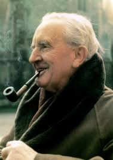
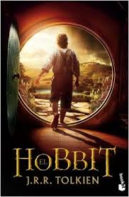
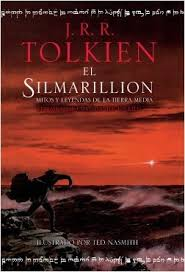

Autor y otras novelas
John Ronald Reuel Tolkien, (3 de enero de 1892-Bournemouth, 2 de septiembre de 1973), a menudo citado como J. R. R. Tolkien, fue un escritor, poeta, filólogo, lingüista y profesor universitario británico, a pesar de muchas de sus obras de poesía y literatura, es conocido principalmente por ser el autor de las novelas clásicas de fantasía heroica El hobbit, El Silmarillion y El Señor de los Anillos.
El Hobbit
Tolkien escribío el libro para el deleite de su familia y el de su círculo literario, sin intención de alcanzar con ellas al gran público. Sin embargo, El hobbit pasó de mano en mano sin intervención del autor hasta llegar a Susan Dagnall, una empleada de la editorial londinense George Allen & Unwin. Ésta le enseñó el libro al presidente de la empresa, Stanley Unwin, quien se lo dio a su hijo pequeño, Rayner, para que lo leyera; la historia le gustó tanto que decidieron publicarlo.
En este libro se narran las aventuras del hobbit Bilbo Bolsón que, junto con el mago Gandalf y una compañía de enanos, se verá envuelto en un viaje para recuperar el reino de Erebor, arrebatado a los enanos por el dragón Smaug.
Si bien se trata de una historia infantil, el libro atrajo también la atención de lectores adultos y se hizo lo suficientemente popular como para que Stanley Unwin le pidiera a Tolkien que trabajara en una secuela, más tarde conocida como El Señor de los Anillos.
El Silmarillion
Tolkien escribió una historia épica que comenzó tres veces pero nunca publicó. Tolkien confiaba en publicarla al abrigo del éxito de El Señor de los Anillos, pero a las editoriales no las convenció; puesto que, además, los costes de impresión eran muy altos en la posguerra.
La historia de esta continua reescritura se cuenta en la serie póstuma de La historia de la Tierra Media, editada por el hijo de Tolkien, Christopher. Desde 1936, aproximadamente, Tolkien empezó a extender su marco de trabajo para abarcar la narración de la caída de Númenor, inspirada en la leyenda de la Atlántida. No fue hasta 1977, de manera póstuma, que los escritos que componen El Silmarillion vieron la luz, recopilados y editados por Christopher Tolkien. A los relatos mencionados (Quenta Silmarillion y Akallabêth), se añadieron para la publicación otros más breves, de los primeros y los últimos tiempos de la Tierra Media: Ainulindalë, Valaquenta y De los Anillos de Poder y la Tercera Edad.
